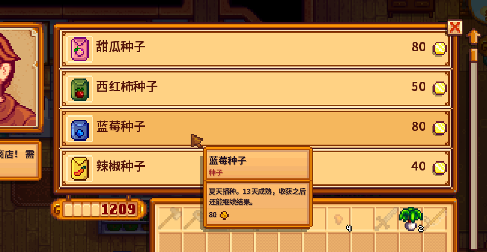
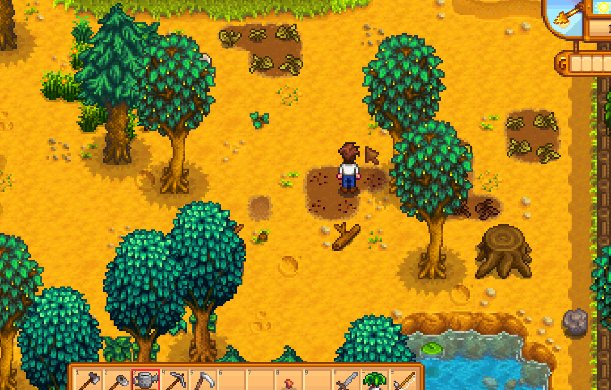
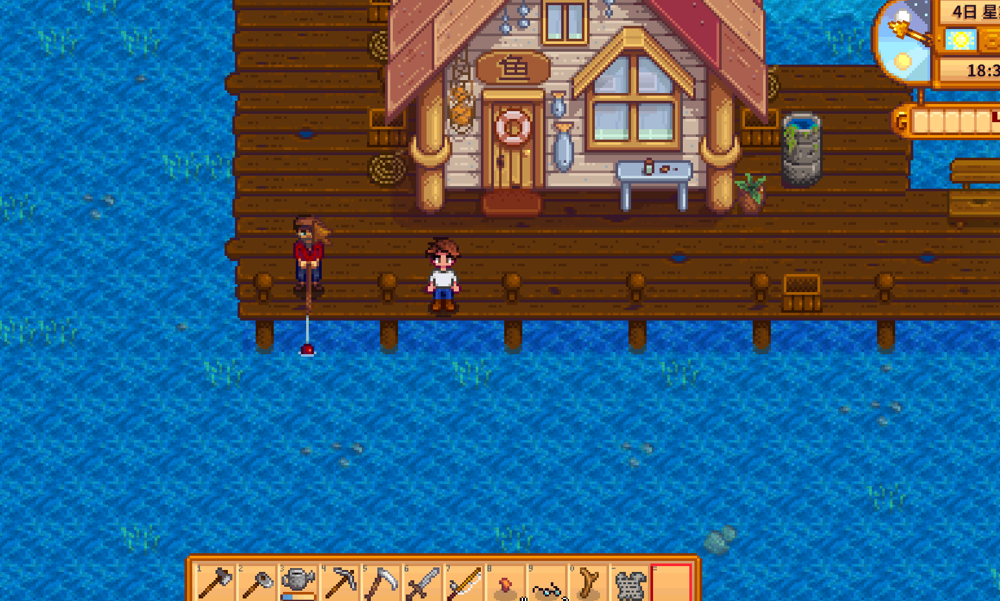
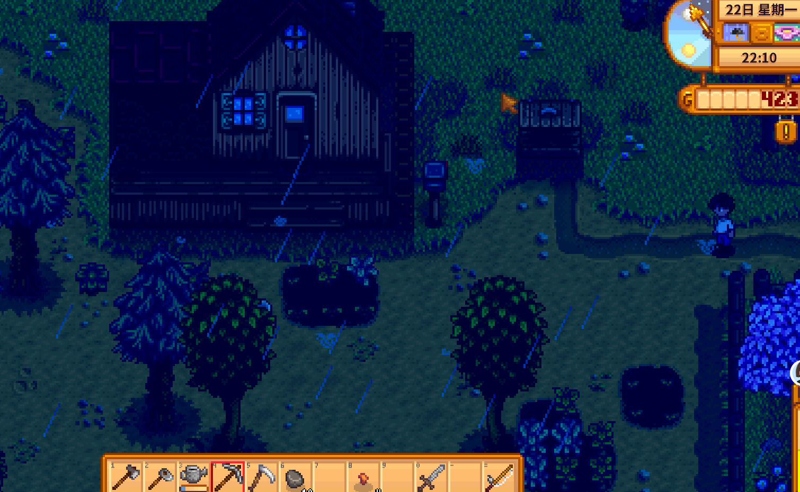

Quick answers (read this first)
- On Summer 1, Spring crops that were not harvested are dead—scythe them off; watering will not revive them.
- Go to Pierre’s (not Wednesday) and buy Summer-only seeds. Blueberries are a strong “keep harvesting” pick; peppers are a cheap multi-harvest backup.
- Plant a patch you can actually water every sunny day—same calm rule as Spring.
- Leave gold for seeds before impulse Traveling Cart buys on the last Spring Sunday.
- Beach, mines, and festivals are extras after the patch is alive.
Who this is for (and who should skip)
Use this if Summer just started, your dirt is full of brown plants, and you are not sure what to buy at Pierre’s.
Skip or skim if you already rotate seasons on autopilot and only need rare crop tables.
Version note: Modern Stardew Valley (1.6-era QoL). We avoid invented profit rankings—pick seeds that match your watering capacity and patience.
From our Year 1 save (real pitfalls):
- Summer 1: brown Spring plants are dead—scythe them; watering will not revive off-season crops.
- We lost a sunny morning with empty dirt because we delayed Pierre’s. Buy Summer seeds day 1 when you have gold (confirm his Wednesday closure in-game).
- Spent our last Spring Sunday gold at the cart once; Summer seed shopping hurt more than the “rare” stock item would have helped.
Pros & cons of a small Summer restart
| Details | |
|---|---|
| Pros | Fast recovery after season change; multi-harvest crops smooth income; less Exhausted spiral. |
| Cons | Farm looks empty for a week; single-harvest melons take longer to pay off. |
| Use when | First Summer, or you blew Spring seed money at the cart. |
| Skip when | You already planted ahead and only need mid-Summer optimization. |
Interactive checklist
Tick as you play. Session-only checkboxes—refresh clears them.
Safe to skip in early Summer (anti-FOMO)
- Replanting the entire farm on Day 1.
- Buying every Summer seed type “just in case.”
- Deep mine pushes before the new patch is watered.
- Stressing over perfect festival scores—screenshots and vibes are enough for Year 1.
Decision table: which Summer seeds to start with
| Seed idea | Choose when… | Wait when… |
|---|---|---|
| Blueberries | You want repeated harvests from one planting | You are nearly broke and need cheaper fillers first |
| Hot peppers | Budget is tight; you still want multi-harvest | You already overplanted more than you can water |
| Tomatoes | You like a simple vine crop loop | Inventory is already chaotic—simplify first |
| Melons | You can wait longer for a bigger single harvest | You need cash flow next week |
Real screenshots from our Year 1 save
Season flip shopping, replanting, beach stop, and farm evening check.

Game screenshot © ConcernedApe — used for guide commentary

Game screenshot © ConcernedApe — used for guide commentary

Game screenshot © ConcernedApe — used for guide commentary

Game screenshot © ConcernedApe — used for guide commentary
How to run Summer Day 1–3 (operations)
- Wake up. If sunny, plan to water; if rainy, skip watering.
- Scythe brown dead plants. Re-hoe the tiles you want.
- Travel to Pierre’s (closed Wednesdays). Buy one primary Summer seed type plus a cheap backup if gold allows.
- Home: plant → water → optional short town walk.
- Pack a snack before beach or mines. Sleep before the bar hits zero.
Common mistakes
- Watering dead Spring crops. They are already gone—clear and replant.
- Arriving at Pierre’s on Wednesday. Shop closed; plan around it.
- Spending Spring 28 gold on cart junk. Summer seeds disappear first.
- Giant Summer field on Day 1. Same Spring trap: unwatered plants die later.
- Ignoring energy after the beach. Summer days feel long; snacks still matter.
Alternative variations
- Money-leaning: Bias toward multi-harvest seeds; keep the patch modest.
- Explorer-leaning: Tiny patch + more mine/beach time—but never skip sunny watering.
- Community Center-leaning: Plant with Pantry Summer slots in mind; keep candidates in a chest.
FAQ
Why did my plants turn brown overnight?
Season changed. Off-season crops die. Harvest on the last day of a season when you can.
Do I need Summer seeds on Day 1?
As soon as Pierre is open and you have gold—yes. Empty dirt earns nothing.
Is fishing required in Summer?
No. Optional after chores. See the energy guide if you keep fainting on the dock.
How does this connect to Spring?
Same loop: small watered patch, anti-FOMO spending, leftover energy for one hobby.
Next steps / related pages
Unofficial fan guide. Not affiliated with ConcernedApe.